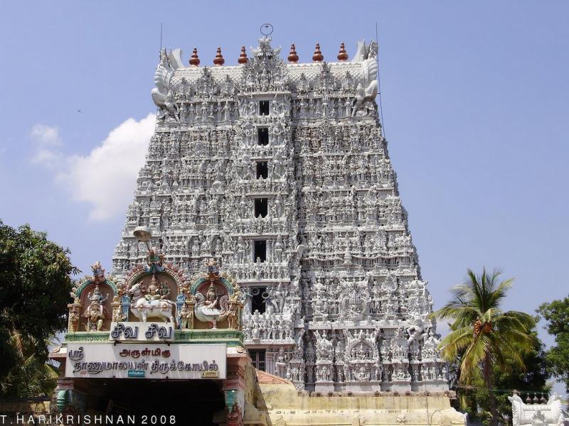

| It is one of the few temples in the country where the Trinity, ‘Brahma, Vishnu and Ishvara’, are worshipped. The temple enshrines ‘Sri Sthanumalaya’, the Trinity of God (Siva, Vishnu and Brahma). The linga is in three parts. The top represents “Sthanu” name of Siva, the middle “Mal” name of Vishnu, and the base “Aya” name of Brahma. One of the legends of Suchindram is related to chastity of Anasuya, wife of Sage Atri. The legend says that the trimurtis appeared in front of Anasuya as begging brahmins. When she was about to serve they imposed a condition that they would eat only if she served them naked. Through the power of her chastity she converted the three Gods into babies and suckled them. On the plea of Godesses, Anasuya restored the dieties. On the same spot a linga sprouted which still exists. Images of Vigneswari (a feminine form of Vinayaka), Goddess Aram Valartha Nayaki, Indra Vinayaka, Kala Bhairava and Saakahi Ganapathy are also enshrined. Inscriptions dating back to the 9th century are found in this temple. The temple was previously controlled by the Namboodiris, one of the main Namboodiri families called the Thekkumon Madam. |  |